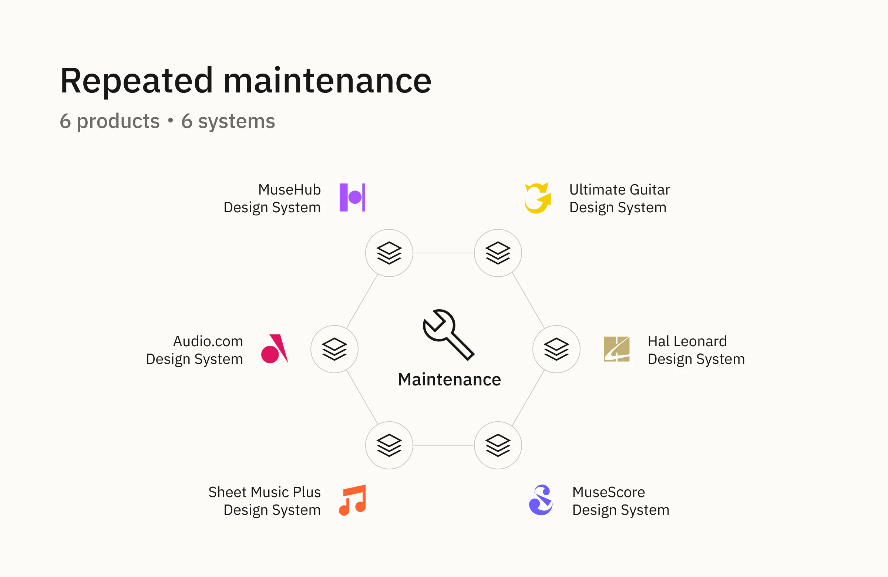
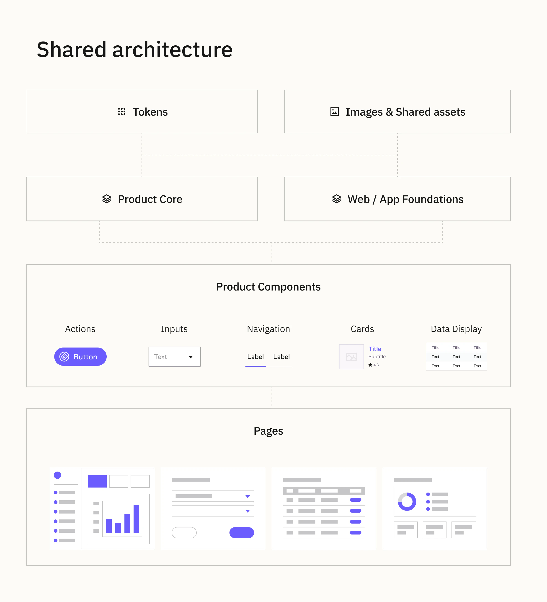
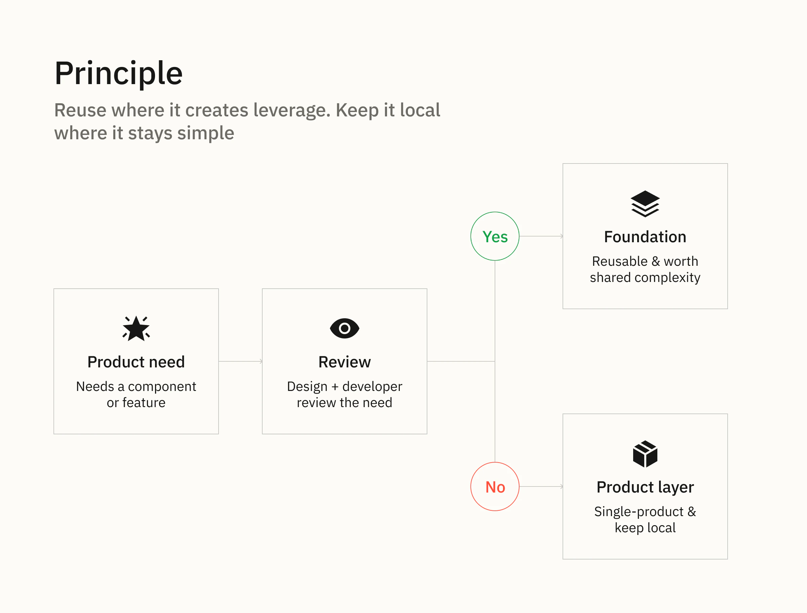
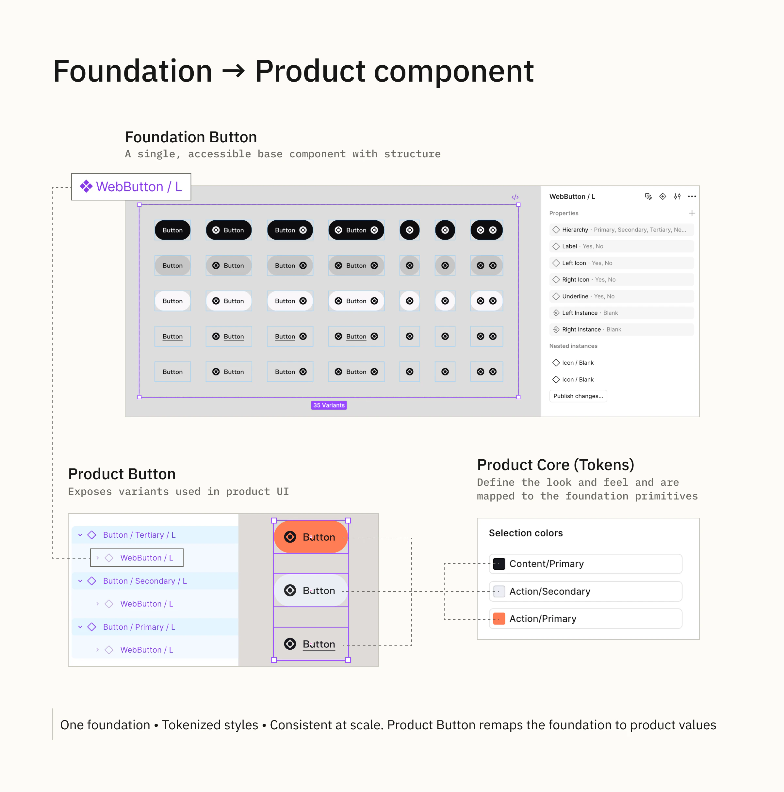
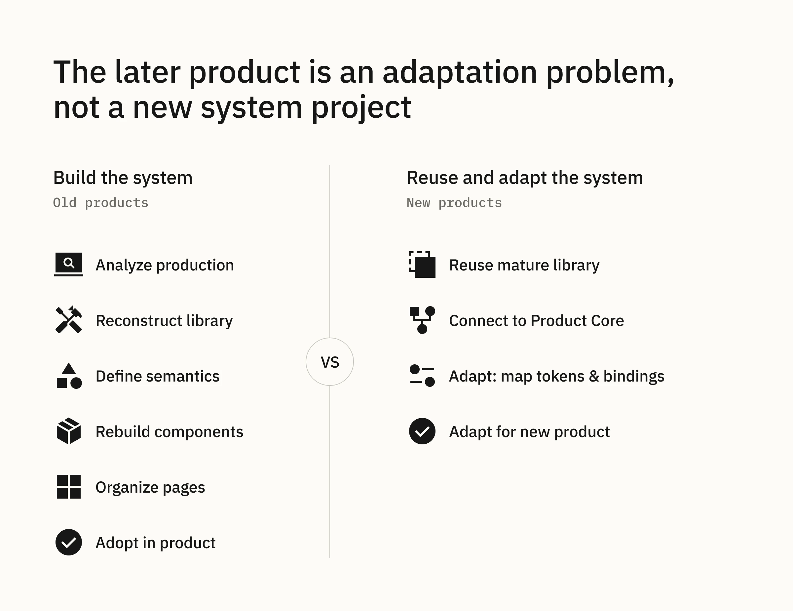
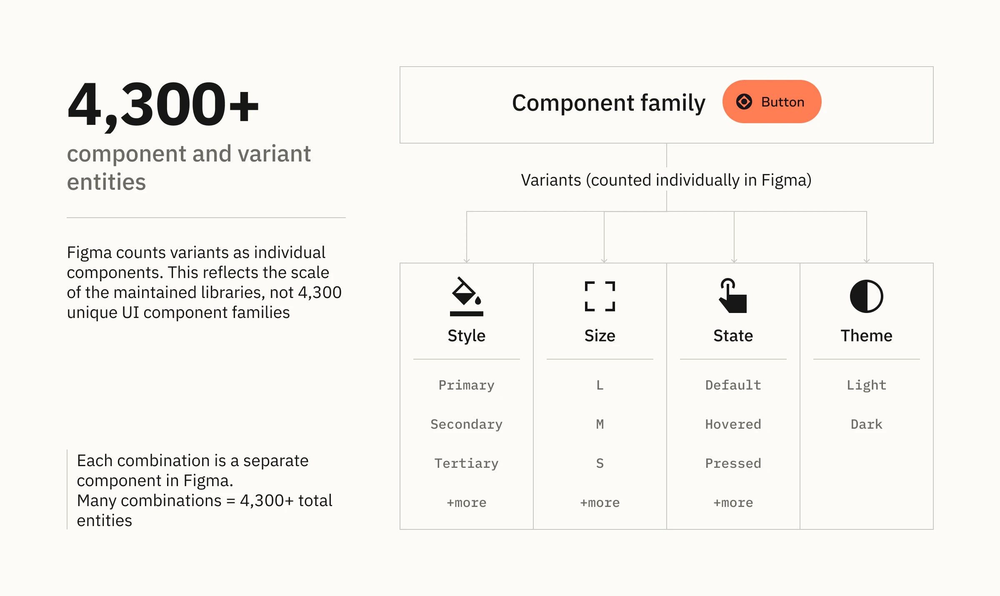

Muse · Architecture · Governance
Scaling a Design System across six products
We moved from maintaining separate product systems to building a shared Design System that could support six products with a small team.
Overview
How we moved from maintaining separate product systems to building a shared Design System that could support six products with a small team.
6 products · Web & App · 4 themed products · 4,300+ Figma component and variant entities
My role: Co-architect and primary Figma maintainer of the shared Design System.
The products entered the ecosystem with very different levels of maturity, legacy and platform complexity. The challenge was no longer improving one library at a time — it was making the system scale across the product portfolio.
01 — Why the old model didn’t scale
At first the scope was manageable: one product, a small Core and around 20 basic components. As the scope expanded, each product added its own component conventions, semantics, assets and legacy constraints.
With a small Design System team, maintaining six independent systems was not sustainable.
The problem was structural: our workload scaled with the number of products.
We needed to separate what was truly product-specific from what could be designed, maintained and evolved once for the whole ecosystem.

02 — The strategic shift
The company-wide rebrand created a natural migration window. Products already had to change colors, typography and other visual foundations, so we used that moment to reconsider which decisions should remain local and which could become shared.
I participated in the visual exploration, but my main contribution was systematisation: identifying inconsistencies, turning recurring decisions into reusable rules and translating the new brand direction into UI foundations.
Around the same time, the company introduced a strategic direction to treat the Design System as an internal product. The direction itself did not originate from me; our team translated it into an architecture and operating model for the Muse ecosystem.
From maintaining six product systems to building one internal product that products could consume.
03 — Shared architecture
We standardised the underlying system rather than forcing every product to look identical.
Shared foundations — primitives, semantic rules, shared assets and baseline Web/App components.
Product adaptation — each product has its own Core, mapping the shared primitives to product-specific semantics and visual parameters.
Product UI — product Web/App libraries reuse Foundation components and add domain-specific components where needed.

Principle: share what is stable; keep variation where it belongs.
04 — Shared where it helps, separate where it doesn’t
We initially explored keeping simple Web and App components together. In practice, visual similarity was not enough: the platforms differed in control dimensions, clickable areas, modal patterns, navigation bars, cells and interaction behaviour.
So Web and App Foundations stayed separate while sharing tokens, semantics, assets and organisational logic.
The same principle applies at product level. Ultimate Guitar, for example, needs control dimensions and icon-to-touch-area combinations that differ from the shared Button model. We could expose enough properties to support every combination, but that would make the common API harder for everyone to use.
A Foundation component should not absorb every product variation just because it technically can.

05 — How it works in practice: Button
A Foundation Button defines the base structure and behaviour. In a product library, it is nested inside a product-level component set and remapped to Product Core values — colors, typography, radius, spacing and other relevant parameters.
Because every Product Core is built on the same Muse Tokens primitives, products can change their visual identity without creating an independent value system.
Foundation Button + Product Core → Product Button → Page / Screen

06 — Migration and governance
A shared architecture did not mean rebuilding every product from scratch. We migrated incrementally, usually starting with Product Core and then moving to components. Where rebuilding legacy provided little immediate value, we kept it and updated the visual styling instead.
Sheet Music Plus is a clear example: its legacy library continued supporting current production while a new system was used for new features. As adoption grows, the old library can disappear progressively.
The goal was adoption, not architectural purity.
New components usually originate from real product needs. Designer and developers review them together and decide whether cross-product reuse justifies the shared complexity.
Patterns such as Pill Button and Gallery moved into Foundation. UG-specific Button variants stayed product-specific, while single-product charts were not promoted into the shared system.
Reuse has to justify shared complexity.
07 — Making the system maintainable
I worked with a developer to align Figma and Storybook around the same component taxonomy: Actions · Inputs · Navigation · Feedback · Overlay · Data Display · Patterns.
Figma component pages use the same predictable structure: Component Meta → Main components → Parts → Usage.
We also reduced documentation deliberately: detailed guidance remains for abstract principles, while component behaviour and corner cases are resolved together during implementation. Designers get concise Usage guidance in Figma; developers get the implemented component in Storybook.
We document decisions and behaviour, not inspectable values.
08 — Proof it scaled
The clearest proof came from later products.
Early in my Muse work, bringing MuseScore into the system meant analysing production, reconstructing libraries, defining semantics, rebuilding components and organising pages.
By the time we worked with Hal Leonard, most of that foundation already existed. I could duplicate the most mature product library built on our shared Foundations, connect it to the new Product Core and remap its token bindings.
Instead of creating another Design System, I was adapting an existing system to another product.
A new product had become primarily an adaptation problem rather than a new Design System project.

Outcome
System: six products share one underlying architecture while retaining product-specific UI and domain patterns.
Team: the Design System team moved from reactive product support toward building and evolving a shared internal product.
My contribution: co-architected the shared system; authored the semantic color architecture, Image Foundation, monochrome Foundation theme and most Foundation components; co-developed the library structure and documentation model; and became the primary Figma maintainer across the ecosystem.
Scale: 4,300+ component and variant entities across the current Web, App and Image Foundation files.

Figma counts variants as individual components. This number describes the scale of the maintained libraries, not 4,300 unique UI component families.